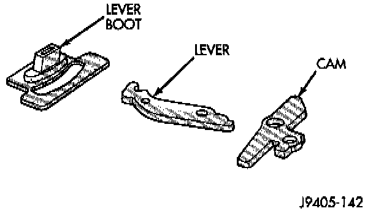
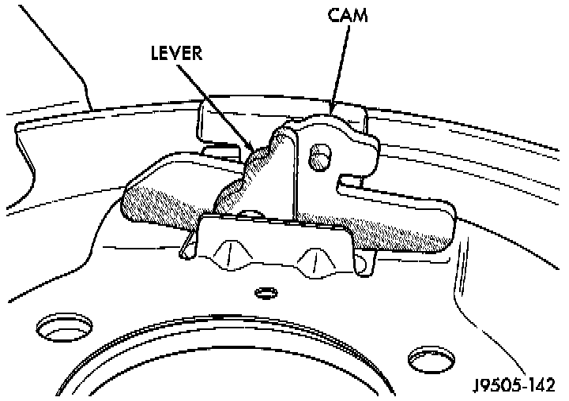

Cam and Lever Replacement
NOTE: The cams are reversible and can be used on either wheel. The levers are NOT reversible. They are marked R and L and the lever notch (for the cable eyelet), must faces rearward on both sides.REMOVAL
1. Raise vehicle.
2. Remove wheel and tire assembly.
3. Remove brake caliper and rotor.
4. Remove parking brake shoes.
5. Move lever forward and disconnect parking brake rear cable from lever.

6. Pull lever forward through boot. Disengage cam from lever and remove cam. Note cam position for installation reference.
7. Remove lever.
INSTALLATION
1. Lubricate replacement lever with silicone grease. Then insert lever part way through boot. Be sure lever notch is facing rearward.

2. Engage cam in lever. Then simultaneously slide cam into place on splash shield and work lever through boot.
3. Install parking brake shoes.
4. Verify correct installation of cam and lever by pulling lever toward front of vehicle. Cam should expand both brake shoes as lever is pulled forward.
5. Install rotor and adjust parking brake shoes.
6. Connect rear cable to lever. Be sure cable eyelet is securely attached in lever notch.
7. Install brake caliper and wheel and tire assembly.
8. Lower vehicle and verify correct parking brake operation.